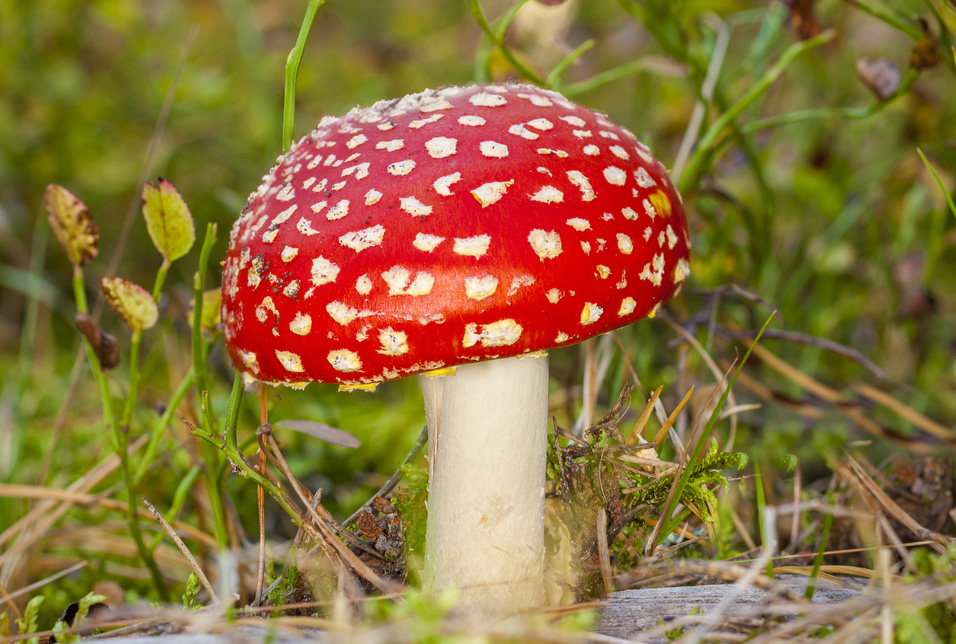

Mushrooms may seem scary because they always get such a bad rap! Some people even call them 'the link between life and death'. While some mushrooms may dangerous for human and animal consumption , they are an essential part of our ecosystem and play a huge role in the forests. Most importantly there are many mushrooms that are safe for human consumption and do wonders for your health! There are lots of cool mushrooms to discover in Maine. With proper research and technique, almost anyone can be a mushroom hunter!

Links to: